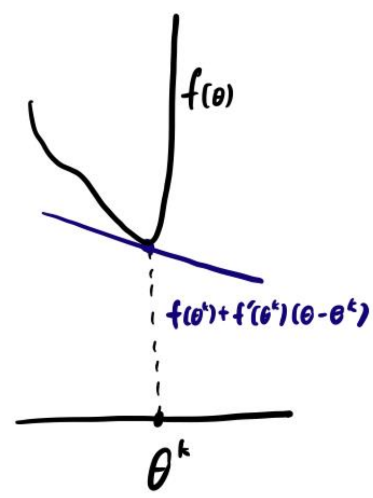
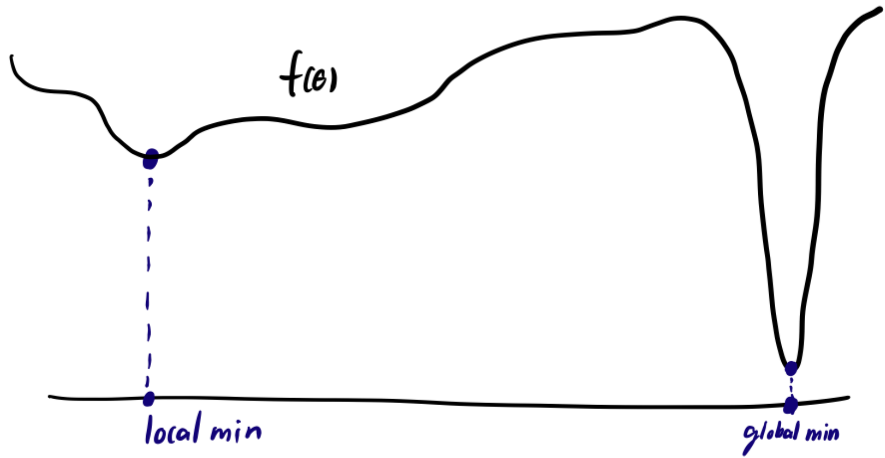

§ 2. Gradient Descent¶
Gradient Descent¶
Definition 2.1 : Gradient Descent
Consider the unconstrained optimization problem
where \(f\) is differentiable.
Gradient Descent (GD) algorithm:
where \(\theta^{0} \in \mathbb{R}^{p}\) is the initial point and \(\alpha_{k}>0\) is the learning rate or the stepsize.
The terminology learning rate is common in the machine learning literature while stepsize is more common in the optimization literature.
In math, a function is "differentiable" if its derivative exists everywhere.
In deep learning (DL), a function is often said to be differentiable if its derivative exists almost everywhere and the function is nice. ReLU activation functions are said to be differentiable.
Concept 2.2 : Efficiency of gradient descent can be expected using the first-order Taylor expansion of \(f\).
Taylor expansion of \(f\) about \(\theta^{k}\) :
Plug in \(\theta^{k+1}\) :
\(-\nabla f\left(\theta^{k}\right)\) is steepest descent direction. For small (cautious) \(\alpha_{k}\), GD step reduces function value.
However, note that a step of GD need not result in descent, i.e., \(f\left(\theta^{k+1}\right)>f\left(\theta^{k}\right)\) is possible.

We need an assumption that ensures the first-order Taylor expansion is a good approximation within a sufficiently large neighborhood.
Convergence of Gradient Descent¶
Without further assumptions, there is no hope of finding the global minimum.
We cannot prove the function value converges to global optimum. We instead prove \(\nabla f\left(\theta^{k}\right) \rightarrow 0\). Roughly speaking, this is similar, but weaker than proving that \(\theta^{k}\) converges to a local minimum.

Without further assumptions, we cannot show that \(\theta^{k}\) converges to a limit, and even \(\theta^{k}\) does converge to a limit, we cannot guarantee that that limit is not a saddle point or even a local maximum. Nevertheless, people commonly use the argument that \(\theta^{k}\) usually converges and that it is unlikely that the limit is a local maximum or a saddle point.
Definition 2.3 : \(L\)-Lipschitz
We say \(\nabla f: \mathbb{R}^{p} \rightarrow \mathbb{R}^{p}\) is \(L\)-Lipschitz if
Roughly, this means \(\nabla f\) does not change rapidly. As a consequence, we can trust the first-order Taylor expansion on a non-infinitesimal neighborhood.
Lemma 2.4 : Lipschitz Gradient Lemma
Let \(f: \mathbb{R}^{p} \rightarrow \mathbb{R}\) be differentiable and \(\nabla f: \mathbb{R}^{p} \rightarrow \mathbb{R}^{p}\) be L-Lipschitz. Then
\(f(\theta)+\nabla f(\theta)^{\top} \delta-\frac{L}{2}\|\delta\|^{2} \leq f(\theta+\delta)\) is also true, but we do not need this other direction. Together the inequalities imply
Proof
Define \(g: \mathbb{R} \rightarrow \mathbb{R}\) as \(g(t)=f(\theta+t \delta)\). Then \(g\) is differentiable and
Note \(g^{\prime}\) is \(\left(L\|\delta\|^{2}\right)\)-Lipschitz continuous since
Finally, we conclude with
Lemma 2.5 : Summability Lemma
Let \(V^{0}, V^{1}, \ldots \in \mathbb{R}\) and \(S^{0}, S^{1}, \ldots \in \mathbb{R}\) be nonnegative sequences satisfying
for \(k=0,1,2, \ldots\) Then \(S^{k} \rightarrow 0\).
Proof
Key idea. \(S^{k}\) measures progress (decrease) made in iteration \(k\). Since \(V^{k} \geq 0, V^{k}\) cannot decrease forever, so the progress (magnitude of \(S^{k}\) ) must diminish to 0.
Sum the inequality from \(i=0\) to \(k\)
Let \(k \rightarrow \infty\)
Since \(\sum_{i=0}^{\infty} S^{i}<\infty, S^{i} \rightarrow 0\).
Theorem 2.6 : Convergence of GD
Assume \(f: \mathbb{R}^{p} \rightarrow \mathbb{R}\) is differentiable, \(\nabla f\) is \(L\)-Lipschitz continuous, and \(\inf _{\theta \in \mathbb{R}^{p}} f(\theta)>-\infty\). Then
with \(\alpha \in\left(0, \frac{2}{L}\right)\) satisfies \(\nabla f\left(\theta^{k}\right) \rightarrow 0\).
Proof
Use Lipschitz gradient lemma with \(\theta=\theta^{k}\) and \(\delta=-\alpha \nabla f\left(\theta^{k}\right)\) to get
and
By the summability lemma, \(\left\|\nabla f\left(\theta^{k}\right)\right\|^{2} \rightarrow 0\) and thus \(\nabla f\left(\theta^{k}\right) \rightarrow 0\).
In deep learning, the condition that \(\nabla f\) is \(L\)-Lipschitz is usually not true (due to the use of ReLU activation functions).
Rather, the purpose of these mathematical analyses is to obtain qualitative insights; this convergence proof are meant to provide you with intuition on the training dynamics of GD and SGD.
Because analyzing deep learning systems as is rigorously is usually difficult, people usually analyze modified (simplified) setups rigorously or analyze the full setup heuristically.
In both cases, the goal is to obtain qualitative insights, rather than theoretical guarantees.
Stochastic Gradient Descent¶
Definition 2.7 : Finite-Sum Optimization Problem
A finite-sum optimization problem has the structure
Finite-sum is ubiquitous in ML. \(N\) usually corresponds to the number of data points.
In finite-sum problem, using GD
is impractical when \(N\) is large since \(\frac{1}{N} \sum_{i=1}^{N} \nabla f_{i}\left(\theta^{k}\right)\) takes too long to compute.
Concept 2.8 : Finite-sum problem can be reformulated with expectation.
Although the finite-sum optimization problem has no inherent randomness, we can reformulate this problem with randomness:
where \(I \sim\) Uniform \(\{1, \ldots, N\}\). To see the equivalence,
Definition 2.9 : Stochastic Gradient Descent
Stochastic gradient descent (SGD)
for \(k=0,1, \ldots\), where \(\theta^{0} \in \mathbb{R}^{p}\) is the initial point and \(\alpha_{k}>0\) is the learning rate.
\(\nabla f_{i(k)}\left(\theta^{k}\right)\) is a stochastic gradient of \(F\) at \(\theta^{k}\), i.e.,
Concept 2.10 : SGD is more efficient than GD.
GD uses all indices \(i=1, \ldots, N\) every iteration
SGD uses only a single random index \(i(k)\) every iteration
When size of the data \(N\) is large, SGD is often more effective than GD.
Concept 2.11 : Efficiency of stochastic gradient descent can be expected using the first-order Taylor expansion of \(F\).
Plug \(\theta^{k+1}\) into Taylor expansion of \(F\) about \(\theta^{k}\) :
Take expectation on both sides:
( \(\mathbb{E}_{k}\) is expectation conditioned on \(\theta^{k}\) )
\(-\nabla f_{i(k)}\left(\theta^{k}\right)\) is descent direction in expectation. For small (cautious) \(\alpha_{k}\), SGD step reduces function value in expectation.
Variants of Stochastic Gradient Descent¶
Consider
SGD can be generalized to
where \(g^{k}\) is a stochastic gradient. The choice \(g^{k}=\nabla f_{i(k)}\left(\theta^{k}\right)\) is just one option.
Lemma 2.12 : Sampling with Replacement Lemma
Let \(X_{1}, \ldots, X_{N} \in \mathbb{R}^{p}\) be given (non-random) vectors. Let \(\frac{1}{N} \sum_{i=1}^{N} X_{i}=\mu\). Let \(i(1), \ldots, i(B) \subseteq\{1, \ldots, N\}\) be random indices. Then
Proof
Definition 2.13 : Minibatch SGD with Replacement
Minibatch SGD with replacement
To clarify, we sample \(B\) out of \(N\) indices with replacement, i.e., the same index can be sampled multiple times.
By Lemma 2.12, \(\frac{1}{B} \sum_{b=1}^{B} \nabla f_{i(k, b)}\left(\theta^{k}\right)\) is a stochastic gradient of \(F\) at \(\theta^{k}\).
Lemma 2.14 : Sampling without Replacement Lemma
Let \(X_{1}, \ldots, X_{N} \in \mathbb{R}^{p}\) be given (non-random) vectors. Let \(\frac{1}{N} \sum_{i=1}^{N} X_{i}=\mu\). Let \(\sigma\) be a random permutation. Then
Proof
Definition 2.15 : Minibatch SGD without Replacement
Minibatch SGD without replacement
We assume \(B \leq N\). To clarify, we sample \(B\) out of \(N\) indices without replacement, i.e., the same index cannot be sampled multiple times.
By Lemma 2.14, \(\frac{1}{B} \sum_{b=1}^{B} \nabla f_{\sigma^{k}(b)}\left(\theta^{k}\right)\) is a stochastic gradient of \(F\) at \(\theta^{k}\).
Concept 2.16 : How to choose batch size \(B\)?
Note \(B=1\) minibatch SGD becomes SGD.
Mathematically (measuring performance per iteration)
- Use large batch is when noise/randomness is large.
- Use small batch is when noise/randomness is small.
Practically (measuring performance per unit time)
- Large batch allows more efficient computation on GPUs.
- Often best to increase batch size up to the GPU memory limit.
In DL, SGD is applied to nice continuous but non-differentiable functions that are differentiable almost everywhere.
In this case, if we choose \(\theta^{0} \in \mathbb{R}^{n}\) randomly and run
the algorithm is usually well-defined, i.e., \(\theta^{k}\) never hits a point of non-differentiability.
With a proof or not, GD and SGD are applied to non-differentiable minimization in ML. The absence of differentiability does not seem to cause serious problems.
Definition 2.17 : Cyclic SGD
Consider the sequence of indices
Here, \(\bmod (k, N)\) is the remainder of \(k\) when divided by \(N\).
Cyclic SGD:
To clarify, this samples the indices in a (deterministic) cyclic order.
Concept 2.18 : Pros and Cons of Cyclic SGD
Strictly speaking, cyclic SGD is not an instance of SGD as unbiased estimation property lost.
Advantage:
- Uses all indices (data) every \(N\) iterations.
Disadvantage:
- Worse than SGD in some cases, theoretically and empirically.
- In DL, neural networks can learn to anticipate cyclic order.
Definition 2.19 : Shuffled Cyclic SGD
Shuffled Cyclic SGD:
where \(\sigma^{0}, \sigma^{1}, \ldots\) is a sequence of random permutations, i.e., we shuffle the order every cycle.
Concept 2.19 : Pros and Cons of Shuffled Cyclic SGD
Again, strictly speaking, shuffled cyclic SGD is not an instance of SGD as unbiased estimation property lost.
Advantages :
- Uses all indices (data) every \(N\) iterations.
- Neural network cannot learn to anticipate data order.
- Empirically best performance.
Disadvantages: - Theory not as strong as regular SGD.
Concept 2.20 : Which variant of SGD to use?
Theoretical comparison of SGD variants:
- Not that easy.
- Result does not strongly correlate with practical performance in DL.
In DL, the most common choice is
- shuffled cyclic minibatch SGD (without replacement) and
- batchsize \(B\) is as large as possible within the GPU memory limit.
One can generally consider this to be the default option.
Definition 2.21 : Epoch in finite-sum optimization and machine learning training
An epoch is loosely defined as the unit of optimization or training progress of processing all indices or data once.
- 1 iteration of GD constitutes an epoch.
- \(N\) iterations of SGD, cyclic SGD, or shuffled cyclic SGD constitute an epoch.
- \(N / B\) iterations of minibatch SGD constitute an epoch.
Epoch is often a convenient unit for counting iterations compared to directly counting the iteration number.
Concept 2.22 : SGD with General Expectation
Consider an optimization problem with its objective defined with a general expectation
Here, \(\omega\) is a random variable. We will encounter these expectations (non-finite sum) when we talk about generative models.
For this setup, the SGD algorithm is
where \(\omega^{0}, \omega^{1}, \ldots\) are IID random samples of \(\omega\). If \(\nabla_{\theta} \mathbb{E}_{\omega}\left[f_{\omega}(\theta)\right]=\mathbb{E}_{\omega}\left[\nabla_{\theta} f_{\omega}(\theta)\right]\), then \(\nabla f_{\omega^{k}}\left(\theta^{k}\right)\) is a stochastic gradient of \(F(\theta)\) at \(\theta^{k}\). (Make sure you understand why the previous SGD for the finite-sum setup is a special case of this.)
GD for this setup is
However, if the expectation is difficult to compute GD is impractical and SGD is preferred.